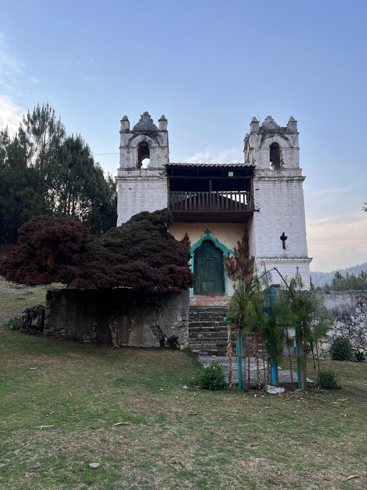

- El viaje hacia la hacienda del retiro y desacanso. La finca del ovispo no esta a mas de 30 minutos del centro historico de San Cristobal de las casas chiapas, el pubelo magico.
En esta religion conocida como los altos de chiapas se encuentra el valle de jovel, esta ciudad durante la epoca colonial de chiapas fue cede de las altas jerarquias de la inglesia
- 
¿Donde se encuntra La Finca Del Ovispo?
- Se encuentra en la colonia “El Carmen Arcoteté”.Por la carretera Calzada de la Quinta a no más de 10 kilómetros y podras llegar en auto, colectivo,
taxi o algunos que son más aventados llegan caminando, la carretera está bien definida y no hay posibilidades de que te vayas a perder.
¿Cual es el costo por entrada?
- El costo por personas es de 10 pesos, la cual cuenta con sanitarios limpios tiene vigilancia para cuidar o resguardar en caso de alguna emergencia.
Este lugar tan maravillo puede ser compartido con familiares y amigos muy ideal para pasarla tranquilo, para llevar alguna comidita relajarse, ya que las fincas del obispo no cuentan con ningunos productos en venta.
- Cuentan con resbaladillas para que los niños puedan divertirse, encementada y resbaladilla de metal, pasamanos y los juegos de trdicion, los sube y baja.